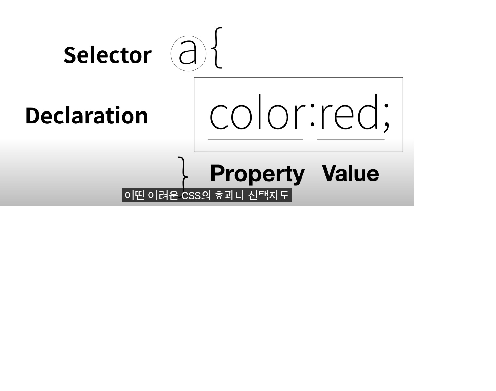

css
정의:디자인적?시각적 관련 요소 ,
장점) css를 통해 중복제거가능.유지보수쉬워짐,가독성향상. 디자인관련태그를 스타일태그로 안에 다 넣을수있음
사용방법) 1.태그style을 통해 컴터에게 스타일~/스타일까지의
언어는 css의문법으로 이해해라 라는 메시지. ex. a{}하면 a가붙은것들은 (중괄호안에있는것들은) css속성지님
2.스타일속성을이용.(=선택자를 사용할필요x)
3.;으로 하나디스크립션이 시작되고끝나는것을구분

4.명령력(?)강한순서 : 아이디선택자>클래스선택자>태그선택자. / 동일선택자일경우 마지막에 등장하는선택자가 높음
cuz. id값은 한번만등장해야함. 유일무이한것이란뜻. 중복되선안됨. 젤 덜포괄적.구체적임